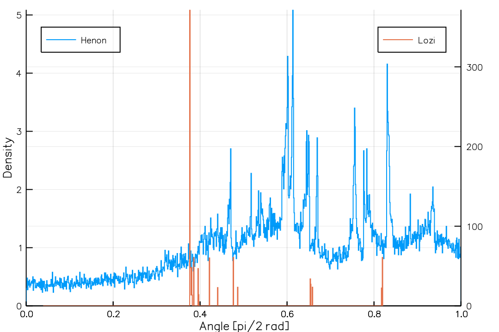

Ginelli et al. (2007), Figure 1a

This is an attempt to reproduce Figure 1a of Ginelli et al. (2007). The following code uses LyapunovExponents.CLVSolver to compute the covariant Lyapunov vectors (CLVs) of the two-dimensional maps, the Hénon map (LyapunovExponents.henon_map) and the Lozi map (LyapunovExponents.lozi_map).
The probability density function of the angles between the two CLVs are plotted. See Ginelli et al. (2007) for how the shape of this probability density function is related to hyperbolicity.
using LyapunovExponents
henon_demo = LyapunovExponents.henon_map(num_attr=100000)
henon_solver = LyapunovExponents.CLVSolver(henon_demo)
@time solve!(henon_solver)
lozi_demo = LyapunovExponents.lozi_map(num_attr=100000)
lozi_solver = LyapunovExponents.CLVSolver(lozi_demo)
@time solve!(lozi_solver)
function get_angles(solver)
Cs = solver.C_history
limit = floor(Int, length(Cs) * 0.9)
return [acos(abs(dot(C[:, 1], C[:, 2]))) * 2 / π for C in Cs[1:limit]]
end
using Plots
plt = plot(xlabel="Angle [pi/2 rad]", ylabel="Density", legend=:topleft)
stephist!(plt, get_angles(henon_solver),
bins=1000, normalize=true, linecolor=1, label="Henon")
stephist!(twinx(plt), get_angles(lozi_solver),
bins=1000, normalize=true, linecolor=2, label="Lozi")
plt